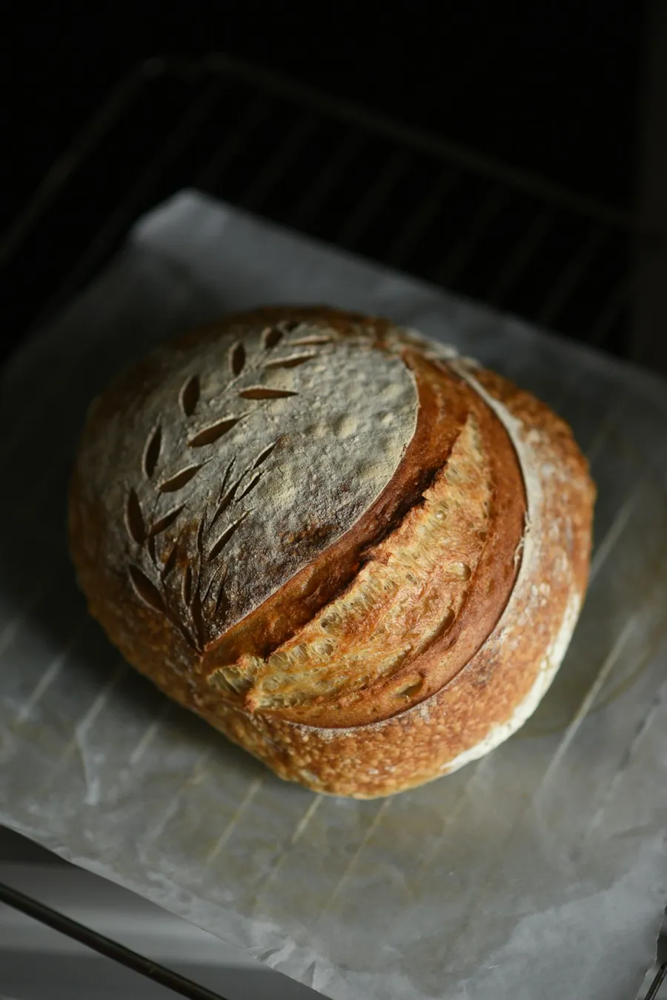
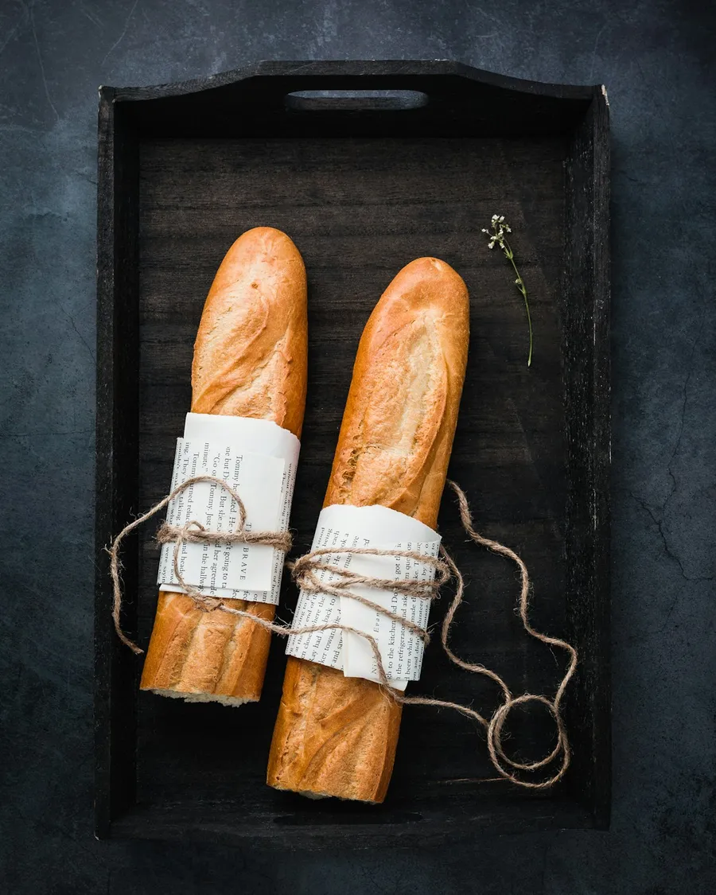
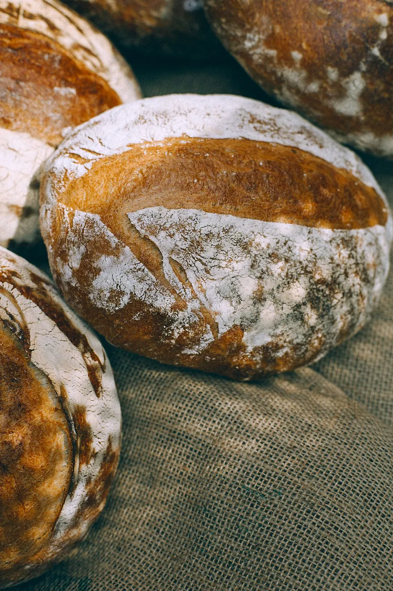
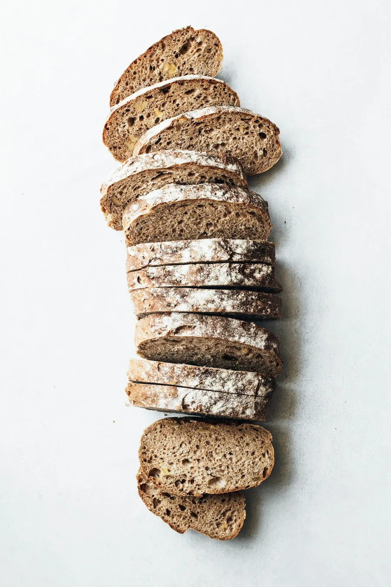
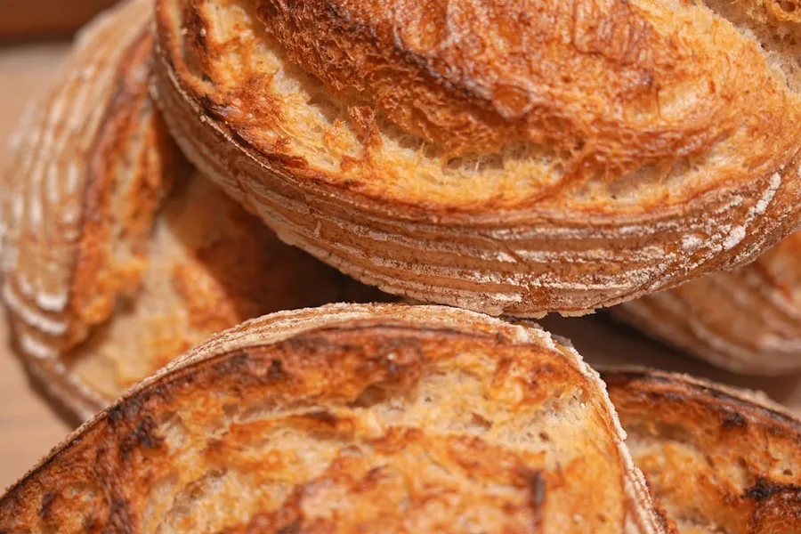

Frisch gebacken,
jeden Morgen.
Sauerteig, Zeit und echtes Handwerk. Bei uns entsteht Brot noch so, wie es entstehen soll – und gleich zwei Orte, an denen man gerne sitzen bleibt.
Saisonales & Sonderbrote
Neben dem festen Sortiment gibt es wöchentlich wechselnde Sonderbrote und Saisongebäck wie die Neujahrsbrezel – am besten kurz vorher in der Bäckerei oder auf Instagram nachfragen, was gerade aus dem Ofen kommt.

Traditionelles Handwerk, modern gedacht.
Seit 2023 führen Christian („Chris") und Tina Schiefer die Bäckerei, die zuvor drei Generationen lang der Familie Lochmann gehörte – nach demselben Grundsatz: der Teig bekommt genügend Zeit.
Vier Brote, ein Handwerk.
Über 15 Brotsorten, dazu Brezeln, süße Teilchen und das Café-Menü. Hier ein Ausschnitt aus dem täglichen Ofen.

Baguette
Knusprige Kruste, luftige Krume

Dinkelbrot
Mild im Geschmack, bekömmlich

Roggenbrot
Kräftig, herzhaft, lange haltbar

Weizenbrot
Locker, hell, ein Klassiker
Nicht nur zum Mitnehmen.
Ob ein Kaffee zwischendurch in der Welzheimer Straße oder ein ganzer Vormittag im neuen Café am Pflegecampus: Frühstück, Brunch und Mittagessen, eingerichtet mit derselben Sorgfalt, mit der wir backen.

Wir freuen uns auf dich.
Bäckerei Welzheimer Straße
Welzheimer Str. 31, 73635 Rudersberg
07183 9339144
| Montag – Freitag | 6:00 – 13:00 Uhr |
| Samstag | 6:00 – 12:00 Uhr |
| Sonntag | 7:30 – 10:00 Uhr |
Café am Pflegecampus
Bronnwiesenweg, 73635 Rudersberg
Frühstück · Brunch · Mittagessen
Öffnungszeiten stehen noch nicht öffentlich fest.
„Super Angebot, Super Qualität, alles in allem Tipp-Top."
— Google-Bewertung„Man merkt sofort: hier steckt Handwerk drin – und der Laden lädt zum Bleiben ein."
— Stammkundschaft aus Rudersberg„Das Dinkelbrot ist mein Favorit: knusprige Kruste, super Krume, jedes Mal frisch."
— Nachbarschaft Welzheimer Straße„Frühstück im neuen Café ist bei uns jetzt fester Termin am Wochenende."
— Gast im Café am Pflegecampus„Freundlich, schnell, und das Brot hält bis zum nächsten Tag frisch."
— Kundschaft aus der Umgebung